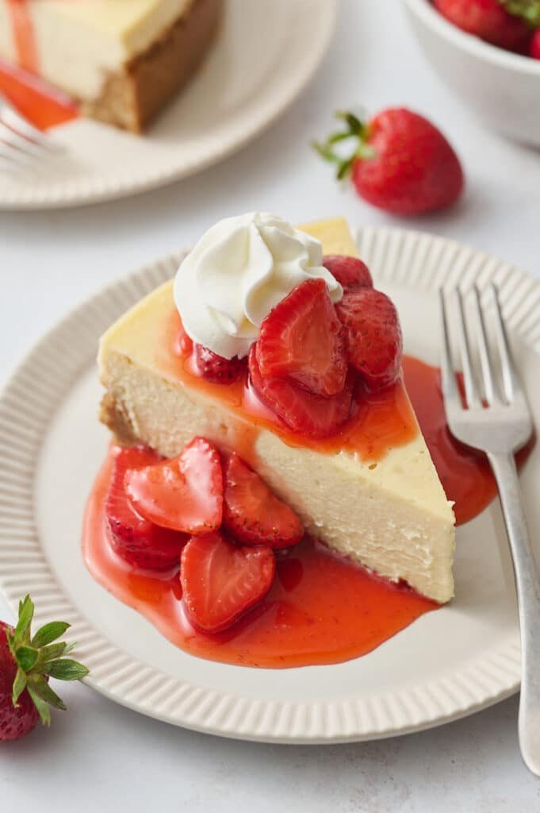

New York Cheesecake Recipe

A classic New York cheesecake with a graham cracker crust and a creamy, smooth filling.
Ingredients
For the crust:
- 2 cups (210g) graham crackers crumbs
- 1/3 cup (66g) granulated sugar
- 1/4 tsp salt
- 1/2 cup unsalted butter, melted
For the cheesecake:
- 24 oz (680g) cream cheese, room temperature
- 1 cup (200g) granulated sugar
- 1/4 cup (60ml) sour cream
- 2 tsp vanilla extract
- 4 large eggs
- 1/4 cup (30g) all-purpose flour
- 1/2 cup (120ml) heavy cream
Steps
For the crust:
- Preheat the oven to 350 degrees (F). Lightly spray a 9-inch springform pan with non-stick spray. Wrap the bottom and sides of the pan with heavy duty extra wide aluminum foil. I recommend doing several diligent layers here to ensure no water creeps through when you place the pan in the water bath. Set the pan aside until needed.
- In a large bowl, combine the graham cracker crumbs, sugar, salt, and melted butter. Mix well. Press the crust into the prepared pan, pressing the crust down firmly and slightly up the sides.
- Bake in a preheated oven for 10 minutes. Place partially baked crust on a cooling rack and set aside while you prepare the filling. Reduce the oven temperature to 325 degrees (F).
For the cheesecake:
- In a large bowl, beat the cream cheese on medium speed until smooth and creamy. Add the sugar and beat until combined. Add the sour cream and vanilla extract, and mix until smooth.
- Add the eggs one at a time, mixing on low speed after each addition. Be careful not to overmix.
- Add the flour and mix until just combined. Finally, add the heavy cream and mix until smooth.
- Pour the cheesecake batter over the prepared crust in the springform pan.
- Place the springform pan in a large roasting pan. Pour hot water into the roasting pan until it reaches halfway up the sides of the springform pan.
- Bake in a preheated oven for 1 hour and 15 minutes, or until the center is set but still slightly jiggly.
- Turn off the oven and leave the cheesecake in the oven with the door slightly open for 1 hour. This helps prevent cracking.
- Remove from the oven and let cool completely at room temperature. Then refrigerate for at least 4 hours or overnight before serving.
Home